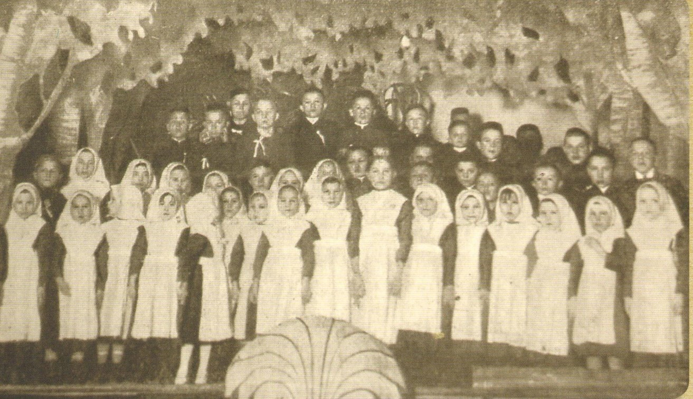
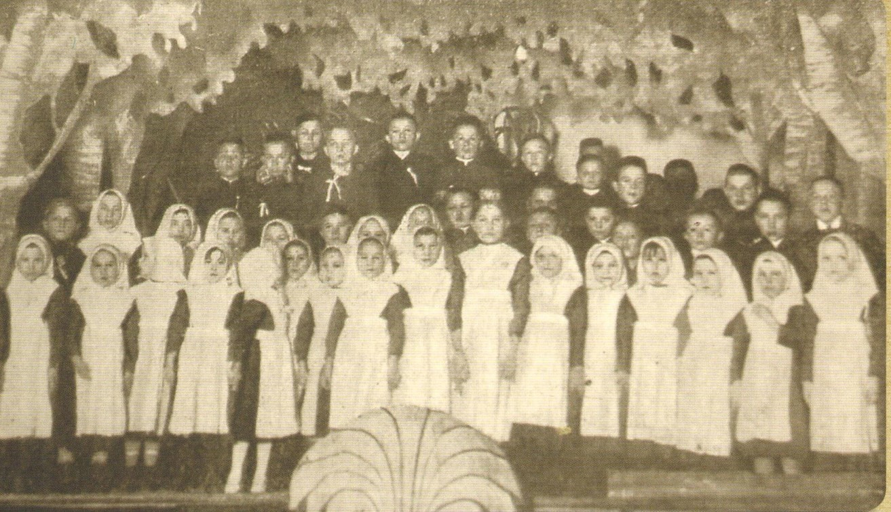
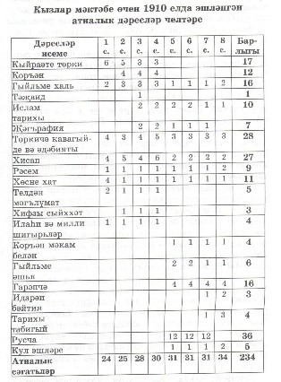
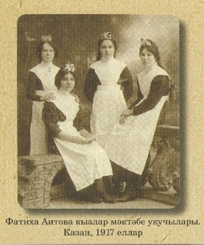
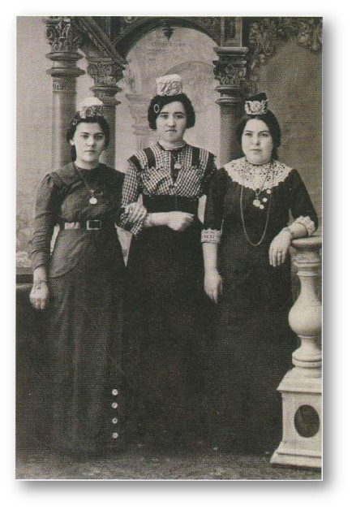
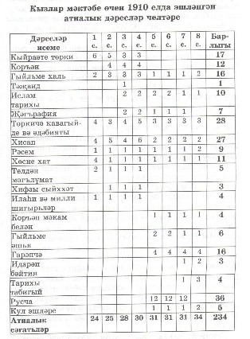
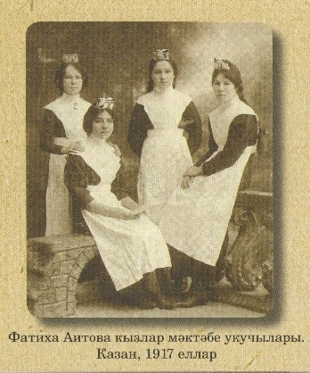
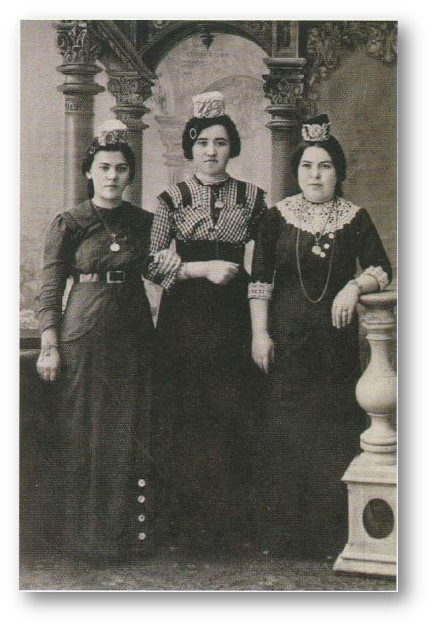
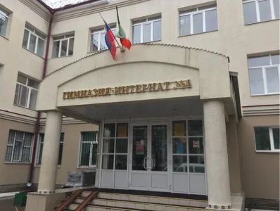

Вторая половина XIX – начало XX веков – эпоха перемен в социально-экономической и культурной жизни татарского народа: происходят изменения в устоявшихся ценностях, поиски новых ориентиров. В 1890 году усилиями Г.М.Галиева (Баруди) и его жены Магруй абыстай была открыта первая женская новометодная школа. Позже такие школы появились и в других регионах России, где проживало татарское население. Наибольшую известность приобрели Иж-Бобинская школа (Вятская губ. ), школы Лябибы Хусаиновой, Маргуй Музаффарии, Рабиги и Сагадат Амирхании, Фатихи Аитовой в Казани, Фагимы Гайнутдиновой в Чистополе, Фатимы Агдамовой, Магубы Рамеевой, Багбостан Мукминовой в Оренбурге, Галимателбанат Биктимировой в Касимове, Ханифы Урмановой в Благовещенске и Агафуровых в Екатеринбурге. Открывались аналогичные школы для девочек в Рязани, Уфе, Астрахани, Перми, Томске, Симбирске, Ростове-на-Дону, Москве.
 

В архивах сохранились как заметки иностранных ученых-путешественников, так и работы русских исследователей о национальной системе образования татар, о «девичьих школах». Например, Сперанский в историко-этнографическом очерке «Казанские татары» пишет: «…Между татарками мало найдется таких, которые не умеют надлежащим образом читать и писать… Кроме грамоты, они обучаются шитью, вышиванию шелками и золотом».
Конечно, женщинам в царской России, особенно в пореформенное время и особенно мусульманкам, приходилось бороться за свои права на образование, собственность, наследственность. Одаренные девушки не ограничивались элементарным уровнем образования в мектебах. Есть материалы о соплеменницах, которые после получения образования в учебных заведениях высшего разряда (медресе) сдавали экзамены по курсу гимназии или учились в вузах России и зарубежья. Уже найдены сведения о сотнях татарок из разных губерний, сумевших получить элитарное образование. Выдержав дополнительные экзамены (как иноверки), они наряду с русскими девушками поступали на курсы: Бестужевские, Высшие женские педагогические, Высшие медицинские, Стебутовские сельскохозяйственные, Раевские научные, Политехнические, а также в университеты.
В 30 женских высших учебных заведениях к 1917 г. училось 38 913 женщин.
Среди девушек, принятых в Казанский университет уже на правах полноправных студенток, были и две татарки — Гайша Апанаева и Амина Мухитдинова. Обеих зачислили на медицинский факультет, хотя затем А. Мухитдинова перевелась на юрфак.
Еще в 1882 году обучение на Высших женских медицинских курсах в Петербурге строили по вузовской программе, но почему-то назвали учебное заведение курсами. Этот вуз закончила Разия Котлыярова.
Племянница Галимджана Баруди Амина Галиева училась в университете в Стамбуле. В Женевском университете получали образование Сафия Сыртланова и Марьям Габдрахманова.
К числу знаменитых женщин можно отнести Ильгамию Богданович. В Москве она закончила и педагогические, и медицинские курсы. Она выступала и на первом Всероссийском съезде мусульман в 1917 году. Слава об их методических приемах расходится далеко. Луначарский, занимавший в ту пору пост министра образования, ознакомившись с методикой преподавания, приглашает их в Москву, чтобы вместе строить советскую образовательную систему.
Гимназия Фатихи Аитовой
Основателями школ для татарских девочек были представители крупной татарской буржуазии. Среди них особое место занимает татарская мектебе для девочек Фатихи Абдулвалеевны Аитовой.
После смерти своего отца, Троицкого купца-миллионера А.Яушева, Ф.А.Аитова (1866–1944) стала единственной наследницей его состояния. Все деньги она хотела использовать в деле просвещения татарских детей.
Открытие мектебе состоялось 27 августа 1909 года
 





На учете в фонде состоит более 48 предметов, где представлены фотографии, книги и предметы быта начала 20 века. Руководитель музея – Гимадиева Гузель Ильдусовна, педагог-библиотекарь, педагог дополнительного образования.

При упоминании мужских и женских школ из истории сразу вспоминаются Смольный институт благородных девиц и кадетские корпусы для юношей. Но учебные заведения, где практикуется раздельное обучение, существуют и современном обществе., причем ярко доказывая свою успешность. Одной из таких школ в Татарстане, городе Казани является наша Гимназия-интернат №4 для девочек. Учебное заведение берет свое начало с сети татарско-турецких лицеев, завоевавших популярность среди жителей республики.
Как очаг просветительства наше учебное заведение было открыто замыслами первого президента Республики Татарстан Минтимером Шариповичем Шаймиевым в 1997 году. Его добрые помыслы были подкреплены помощью благотворителей. В разные годы наши гимназистки, покидая родное учебное заведение, получают высшее образование и возвращаются вновь в родные стены сеять разумное, доброе, вечное. На обучение и воспитание принимают одаренных девочек из разных городов и сел Татарстана и городов России.
Конкурс при поступлении как при поступлении в популярный вуз, дает шанс только способным и талантливым. 100% выпускниц гимназии успешно поступают в высшие учебные заведения России, Турции, США, Великобритании. Средний балл по результатам ЕГЭ по всем предметам год от года увеличивается. Гимназия включена в энциклопедию «одаренные дети - будущее России».
Полилингвальное пространство, гендерное обучение в гимназии-интернате №4 обусловило создание на базе школы научно-исследователького проекта “Созвездие просветителей”, который действует более девяти лет. татарских женщин должно оставаться в памяти народа.
Инновационный лицей с раздельной формой обучения. Изучение ряда предметов на английском языке: математика, физика, химия, биология, информатика.


Сыйман Джафер бей,
директор с 1997-1999гг

Коркмаз Ахмет бей,
директор с 1999-2002гг

Шайморданова Фарида Абдулхаевна,
директор с 2003-2004гг
Фаттиев Марат Минтагирович,
директор с 2004-2018гг

Гиззатуллин Тагир Радикович,
директор с 2018-2021гг,
Ризатдинов Алмаз Гаязович,
директор с 2021г - по настоящее время
Кэрулы Наиля Фазыловна,
учитель английского языка
с 1997г – по настоящее время,
заместитель директора по УР
с 2018г- по настоящее время
Вафина Резеда Равилевна,
учитель физической культуры
с 2005г – по настоящее время

Мишанина Ольга Афанасьевна,
учитель русского языка
и литературы с 2002 – 2016гг
Зинько Татьяна Михайловна,
учитель математики
с 2001г – по настоящее время

Аян Месут,
учитель информатики с 2001-2020гг

Валишина Альфия Рустямовна,
учитель истории
и обществознания с 2003 – 2018гг
Ежегодно в гимназии проходят республиканские, международные научно-практические конференции, раскрывающие тему этого проекта.
Они проводятся совместно с факультетом филологии Казанского университета, Всемирным Конгрессом татар и другими общественными организациями. Конкурс для учащихся «Асылташ» впервые прошел в рамках проекта в 2019т году. Для гостей конференции были подготовлены исторически восстановленные уроки из программы обучения школ для девочек начала 20 века. Это «Әхлак” (воспитание), “тыйб” (медицина), “Кул эшләре” (вышивание).
В апреле 2021 года к очередной конференции “Мэгрифәт йолдызлыгы” мы восстановили и инсценировали урок татарского просветителя , педагога 19 века Каюма Насыйри о словообразовании..
Уроки были поставлены на старотатарском языке, по собственному сценарию. Также были подготовлены инсценировки из жизни гимназисток начала 20 века, основанные на реальных событиях
Женское национальное образование и просветительство стало темой республиканских семинаров,
проводимых в стенах гимназии с 2010-2017 гг.
Этот проект, созданный заведующей библиотекой нашей гимназии Гимадиевой Гузель Ильдусовной,
лег в основу создания нашего музея.